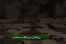

Lacraia e Tarântula
- Visual e somAgora elas mostram a barra de vida em cima: verde para você e seu time, vermelha para os inimigos, que só a veem quando ela está à vista.
- JogabilidadeElas viram pó assim que a vida chega a zero, sem a pausa de antes.
- CorreçãoQuando o dono morria, elas ficavam paradas no mapa. Agora viram pó junto.